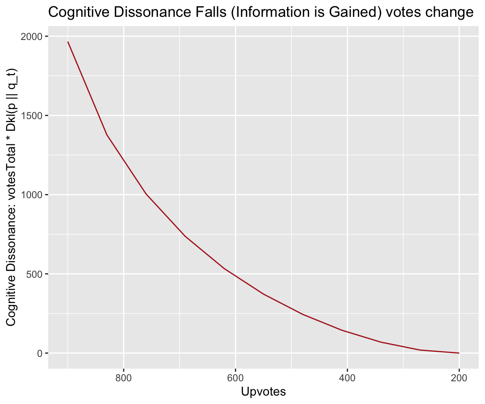

Chapter 4 Cognitive Dissonance
As described in the Global Brain Overview, the goal of the global brain algorithm is to focus users’ attention on posts that reduce cognitive dissonance – difference of belief that exist only exist because people have been exposed to different information. When a note on a post changes the probability that users upvote the post, then there is cognitive dissonance in proportion to the number of people who voted on the post without being shown the note. Information theory lets us easily quantify this cognitive dissonance using the concept of entropy.
4.1 Key Concepts from Information Theory
Here’s a quick summary of the relevant concepts of information theory:
- surprisal: how surprised I am when I learn that the value of X is x:
\[Suprisal(x) = -{\lg P(X=x)}\]
- entropy: how surprised I expect to be:
\[ \begin{aligned} H(P) &= 𝔼 Suprisal(X) \\ &= 𝔼 -{\lg P(X)} \\ &= ∑_x P(X=x) × -{\lg P(X=x)} \\ \end{aligned} \]
- cross-entropy: how surprised I expect Bob to be (if Bob’s beliefs are \(Q\) instead of \(P\)):
\[ \begin{aligned} H(P,Q) &= 𝔼 Suprisal_Q(X) \\ &= 𝔼 -{\lg Q(X)} \\ &= ∑_x P(X=x) × -{\lg Q(X=x)} \end{aligned} \]
- relative entropy or KL divergence: how much more surprised I expect Bob to be than me:
\[ \begin{aligned} D_{KL}(P || Q) &= H(P,Q) - H(P) \\ &= ∑_x P(X=x) × {\lg \frac{P(X=x)}{Q(X=x)}} \end{aligned} \]
When dealing with binary variables then these formulas can be written as:
- entropy:
\[ H(p) = - p × {\lg p} - (1-p) × {\lg (1-p)} \]
- cross-entropy:
\[ H(p,q) = - p × -{\lg q} - (1-p) × {\lg (1-q)} \]
- relative entropy or KL-divergence:
\[ D_{KL}(p||q) = - p × {\lg \frac{p}{q}} - (1-p) × {\lg \frac{1-p}{1-q}} \]
4.2 Surprisal as a Measure of Error
Surprisal can be thought of, for our purposes, as a measure of the “error” of a prediction. If we predict that something has a 1% chance of happening, and it happens, surprisal is \(-{\lg .01} = 6.64~bits\), whereas if we predicted it had a 99% chance of happening, surprisal is only \(-{\lg .99} = 0.14~bits\), which is much smaller. If we thought there was a 50/50 chance, surprisal is \(-{\lg .5} = 1~bit\).
Suppose we predict that the probability of a user upvoting a post is \(p\). Then suppose there are actually \(upvotes\) upvotes and \(downvotes\) downvotes. What is the total error of our predictions?
Every time there is an upvote, surprisal is \(-{\lg p}\). The probability of a downvote is just \(1-p\), so whenever there is a downvote surprisal is \(-{\lg (1-p)}\).
So our total error is:
\[ upvotes × -{\lg p} + downvotes × -{\lg (1-p)} \]
Since \(upvotes ≈ votesTotal×p\), and \(downvotes ≈ votesTotal×(1-p)\) our total error is approximately:
\[ \begin{aligned} & votesTotal × p × -{\lg p} + votesTotal × (1-p) × -{\lg (1-p)} \\ & = votesTotal × H(p) \end{aligned} \]
In other words, our error is roughly entropy times the number of votes.
4.3 Total Cross Entropy
Let’s say Alice estimates the probability of an upvote to be \(q\), but Bob thinks the probability of an upvote is \(p\). So Bob’s measure of Alice’s error will different from Alice’s measure of her own error! Bob’s measure of Alice’s error is:
\[ \begin{aligned} &upvotes × -{\lg q} + downvotes × -{\lg (1-q)} \\ &≈ votesTotal×p × -{\lg q} + votesTotal×(1-p) × -{\lg (1-q)} ) \\ &= votesTotal×( p×-{\lg q} + (1-p)×-{\lg (1-q)} ) \\ &= votesTotal×H(p,q) \\ \end{aligned} \]
\(H(p,q)\) is the cross entropy between Bob and Alices’s estimates: Bob’s estimate of Alice’s average error.
In our case, Alice represents the average uninformed user (users who haven’t seen the note on a post), and Bob represents the informed user. There are \(votesTotal\) “Alices”, or uninformed users. Bob expects the total error of all the uninformed users to be \(votesTotal×H(p,q)\).
\(H(p,q)\) will always be greater than \(H(p)\) if \(p≠q\). That is, Bob’s measure of Alice’s error will always be greater than his measure of his own error as long as his beliefs differ from Alice’s.
This is due to a very powerful property of surprisal as a measure of error: expected surprisal is minimized when the estimated probability equals the actual frequency of the event. So over- or under- estimating the probability always results in more error in the long run. Since \(H(p,q)\) tells us what Alice’s average error would be, in the long run, if \(p\) were the true frequency, \(H(p,q)\) is minimized when Alice’s estimate \(q\) equals the true frequency \(p\), or when \(H(p,q)=H(p,p)=H(p)\).
4.4 Total Relative Entropy = Cognitive Dissonance
The difference between \(H(p,q)\) and \(H(p)\) is relative entropy, also known as the Kullback–Leibler divergence or KL-divergence. It can be thought of as “how much more surprised Bob expects Alice to be than himself”. Since \(H(p,q) >= H(p)\), relative entropy is never negative, regardless of whether \(p\) is greater or less than \(q\).
If we take Bob’s measure of Alices’s total error, minus his measure of his own total error, we get the total relative entropy: how much more error Bob expects for Alice than he would expect if Alice knew more.
The total relative entropy is our measure of cognitive dissonance.
\[ \begin{aligned} cognitiveDissonance &= votesTotal × H(p,q) - votesTotal × H(p) \\ &= votesTotal × ( H(p,q) - H(p) ) \\ &= votesTotal × D_{KL}(p || q) \end{aligned} \]
4.5 Detailed Example
Suppose a post without a note is given receives 900 upvotes and 100 downvotes. But a certain note, when shown along with the post, reduces the upvote probability to 20%.
The total cognitive dissonance is
\[ \begin{aligned} cognitiveDissonance &= votesTotal × D_{KL}(p || q) \\ &= votesTotal × ( p × {\lg \frac{p}{q}} + (1-p) × {\lg \frac{1-p}{1-q}} ) \\ &= 1000 × ( .2 × lg~\frac{.2}{.9} + .8 × lg~\frac{.8}{.1} ) \\ &= 1966.01~bits \end{aligned} \]
Suppose that, after showing the note to users that already upvoted the post, 70 users change their upvote to a downvote.
The new upvote probability \(q_1\) will be approximately
\[ \begin{aligned} q_1 &≈ \frac{upvotes - 70}{votesTotal} \\ &= \frac{900 - 70}{1000} \\ &= .83 \end{aligned} \]
The new cognitive dissonance will therefore be
\[ \begin{aligned} cognitiveDissonance_1 \\ &= votesTotal × DKL(p, q_1)\\ &= votesTotal × DKL(.2, .83 ) \\ &= 1376.95~bits \end{aligned} \]
So cognitive dissonance was decreased by \(1966.01-1376.95 ≈ 589\) bits. Or in other words, 589 of information was gained.
The table below shows how relative cognitive dissonance falls as users change upvotes to downvotes, reaching zero when \(p=q_t\) and therefore \(upvotes=p×votesTotal=200\).
| q_t | upvotes | dkl | dissonance | informationValue |
|---|---|---|---|---|
| 0.90 | 900 | 1.9660150 | 1966.01500 | NA |
| 0.83 | 830 | 1.3769499 | 1376.94994 | 589.06506 |
| 0.76 | 760 | 1.0043726 | 1004.37259 | 372.57734 |
| 0.69 | 690 | 0.7368662 | 736.86616 | 267.50644 |
| 0.62 | 620 | 0.5327468 | 532.74682 | 204.11933 |
| 0.55 | 550 | 0.3721737 | 372.17368 | 160.57315 |
| 0.48 | 480 | 0.2445838 | 244.58382 | 127.58985 |
| 0.41 | 410 | 0.1443033 | 144.30325 | 100.28057 |
| 0.34 | 340 | 0.0689202 | 68.92023 | 75.38302 |
| 0.27 | 270 | 0.0190909 | 19.09095 | 49.82928 |
| 0.20 | 200 | 0.0000000 | 0.00000 | 19.09095 |

Note how the rate of reduction of cognitive dissonance falls as \(q\) approaches \(p\).
Focusing attention on posts and notes that maximize the rate of reduction of cognitive dissonance is the overall goal of the global brain algorithm. See the next document on [information-value.html].
4.6 Discussion
4.6.1 Parallel to Machine Learning
Cross entropy is commonly used used as the cost function in many machine learning algorithms. A neural network for example takes an input with labels (e.g. images of cats and dogs) and outputs an estimated probability (e.g. that the image is a cat). The cost function computes how far these probability estimates are from the correct labels, and the neural network is trained by minimizing the cost function.
If \(ŷ_i\) is the machine’s predicted probability for training example \(i\), and \(y_i\) is the correct output (1 or 0), then the total cross entropy cost is:
\[ \sum_i H(y_i, ŷ) = \sum_i y_i × -{\lg ŷ_i} + (1-y_i) × -{\lg(1 - ŷ_i)} \]
In our case, if we say that \(y_i\) are users votes, and \(ŷ_i\) is always equal to the uninformed users prediction \(q\), then our cost function is identical to the cost function used when training a neural network:
\[ \begin{aligned} \sum_i H(y_i, q) &= \sum_i y_i × -{\lg ŷ_i} + (1-y_i) × -{\lg(1 - ŷ_i)} \\ &= \sum_i y_i × -{\lg q} + (1-y_i) × -{\lg(1 - q)} \\ &= upvotes × -{\lg q} + downvotes × -{\lg(1 - q)} \\ &≈ votesTotal×H(p,q) \\ \end{aligned} \]
So both neural networks and the global brain “learn” by reducing cross entropy. The difference is that the global brain reduces entropy not by learning to make better predictions, but by in a sense teaching users to make better predictions of how a fully-informed user would vote.
4.6.2 A Subtle Point
Note that cross-entropy in our case is a measure of the total surprise of uninformed users at the hypothetical future votes of informed users. That is to say, it is:
\[ \begin{aligned} &votesTotal×p × -{\lg q} \\ &+ votesTotal×(1-p) × -{\lg (1-q)} ) \\ &≈ hypotheticalInformedUpvotes × -{\lg q} \\ &+ hypotheticalInformedDownvotes × -{\lg (1-q)} ) \\ &= votesTotal×H(p,q) \end{aligned} \]
And not
\[ \begin{aligned} & votesTotal×q × -{\lg q} \\ &+ votesTotal×(1-q) × -{\lg (1-q)} ) \\ &≈ actualUpvotes × -{\lg q} \\ &+ actualDownvotes × -{\lg (1-q)} ) \\ &= votesTotal×H(q) \end{aligned} \]
This is potentially confusing (it caused me a great deal of confusion initially) because we are measuring the error of Alice’s estimated probability \(q\) with respect to hypothetical events that have have not yet actually occurred. But shouldn’t we be measuring the error of the votes that have occurred?
No, because surprisal is a measure of the error of a probability estimate, no the error of the event. The events are “what actually happens” or, in case of uncertainty, “what we think will actually happen” given our best current estimate \(p\).
Measuring error against actual vote events just gives us \(votesTotal*H(q)\), which doesn’t tell us how much actual votes differ from what they should be if users were more informed.
\(votesTotal×H(p,q)\) makes the most sense as a measure of the tension between the current state of user’s beliefs, and what that state should be, which is a hypothetical future where all users have changed their upvotes because of the information in the note, and thus \(actualUpvotes = hypotheticalInformedUpvotes\) and \(actualDownvotes = hypotheticalInformedDownvotes\).